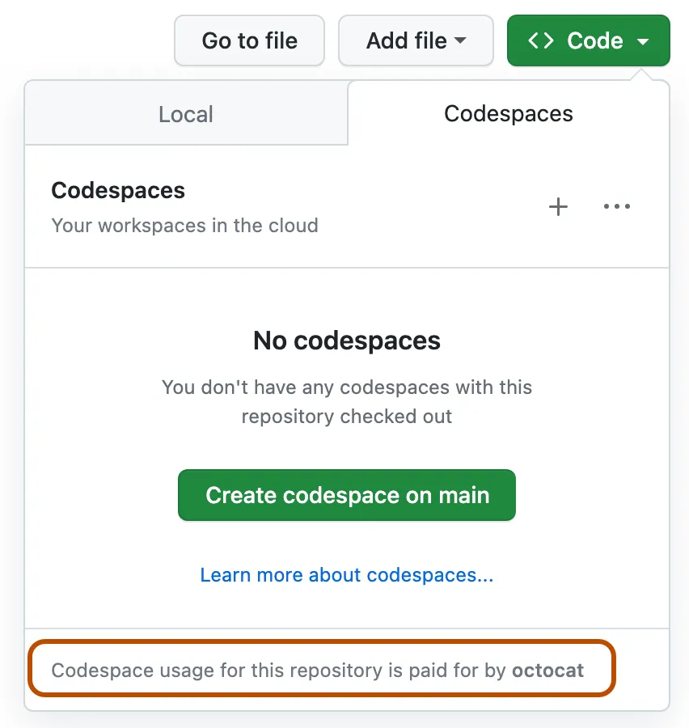

Configuration cloud ☁️ – GitHub Codespaces#
Utilisez ce guide si vous ne souhaitez rien installer en local.
Codespaces vous offre une instance VS Code gratuite dans le navigateur, avec toutes les dépendances déjà installées.
1. Pourquoi Codespaces ?#
| Avantage | Ce que ça signifie pour vous |
|---|---|
| ✅ Aucune installation | Fonctionne sur Chromebook, iPad, PC de salle de classe… |
| ✅ Conteneur de développement préconfiguré | Python 3, Node.js, .NET, Java déjà inclus |
| ✅ Quota gratuit | Les comptes personnels bénéficient de 120 heures-cœur / 60 Go-heures par mois |
💡 Astuce
Préservez votre quota en arrêtant ou supprimant les codespaces inactifs
(Affichage ▸ Palette de commandes ▸ Codespaces : Arrêter le codespace).
2. Créer un Codespace (en un clic)#
- Forkez ce dépôt (bouton Fork en haut à droite).
- Dans votre fork, cliquez sur Code ▸ Codespaces ▸ Create codespace on main.

✅ Une fenêtre VS Code s’ouvre dans le navigateur et le conteneur de développement commence à se construire. Cela prend ~2 minutes la première fois.
3. Ajoutez votre clé API (de façon sécurisée)#
Option A Secrets Codespaces — Recommandé#
- ⚙️ Icône engrenage -> Palette de commandes -> Codespaces : Gérer les secrets utilisateur -> Ajouter un nouveau secret.
- Nom : OPENAI_API_KEY
- Valeur : collez votre clé → Ajouter le secret
C’est tout—le code la détectera automatiquement.
Option B Fichier .env (si vous en avez vraiment besoin)#
cp .env.copy .env
code .env # fill in OPENAI_API_KEY=your_key_here